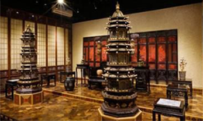
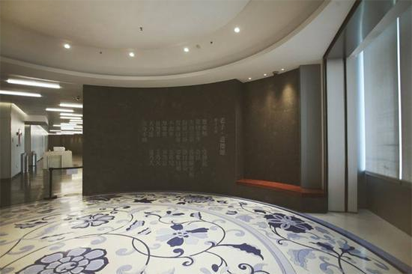
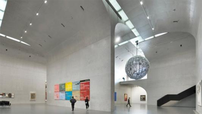

At present, with the encouragement of relevant national policies, the rise of folk museums is sweeping across China. Speaking of folk museums, I have heard of "three-inch golden lotus", "spark", "ancient porcelain", "ancient coins", "chopsticks" and other folk collections in the past, but most of them are small in scale, not climate, and basically In the residential area, the conditions are simple. With the rise of basic construction in various places, the construction of scenic spots has become a trick to create “city business cards” everywhere. As a result, various scenic spots have built various collections and they have been busy for a while. However, as time passes, it gradually becomes self-destructive. (While the new round of civil museum construction is booming, can the relevant departments of the localities pay some attention, support and help to such collections?) Today, many folk museums have been impressive. Among the best, Ma Weidu’s “Viewing Museum”, Liu Yiqian’s “Dragon Art Museum” and Fan Jianchuan’s “Jianchuan Museum” are the most famous. These three museums have already opened a number of branches, and all of them are "high, big, and upper". Beijing Guanfu Museum The Beijing Guanfu Museum was approved by the government on October 30, 1996. Mr. Ma Weidu was the founder. In 2004, the board of directors was implemented. Guanfu Museum is located at No. 18 Jinnan Road, Zhangwan Tomb, Dashanzi, Chaoyang District, Beijing, with a total area of eight acres.  The Guanfu Museum houses a ceramics hall, a furniture hall, a craft hall, a door and window pavilion and an oil painting hall. The exhibition focuses on the open form, emphasizing the communication between people and history and highlighting the affinity of traditional culture. The porcelain exhibited in the ceramics hall is the most representative artifact in the Tang, Song, Liao, Jin, Yuan, Ming and Qing Dynasties. The furniture hall is divided into 6 exhibition halls, displaying more than 100 pieces of Ming and Qing precious furniture. In the craft hall, the exhibition of copper tires, silk tires, copper paintings, metal statues, bronzes, lacquerware, jade articles, woodware, treasures and other historical treasures are displayed throughout the year, and there is a real-life exhibition of “Songxi Caotang”. The ancient Chinese door and window exhibition at the Guanfu Museum is one of the few unique themes in China. The Oil Painting Museum displays important works of Chinese contemporary oil painters and sculptors throughout the year, and adjusts the theme of the exhibition from time to time. Xiamen Guanfu Museum Xiamen Guanfu Museum is located in Gulang Garden, the most famous garden in Gulangyu Island, facing the Qiuqiu Pavilion. The area is more than 600 square meters and is distributed in a chain. There are eight exhibition halls, and the exhibition line is clear and clear. The interior decoration is simple and detailed, and many traditional Chinese techniques, such as hand-carved partitions and large paints, are used to add color to the museum environment. The Xiamen Guanfu Museum is divided into the Ancient Chinese Furniture Exhibition, the Food Beauty Exhibition, the Ancient People's Love Exhibition, the Ming and Qing Ceramics Exhibition and the special exhibition. The Ancient Chinese Furniture Fair showed the hardwood furniture of the Ming and Qing Dynasties according to the traditional Chinese folk houses. The American Art Exhibition exhibited the cups, dishes and dishes of the Ming and Qing Dynasties, which gave a glimpse of the exquisite details of the ancient life. The special angles show the ancients in life, such as the joy of drinking white wine, the elegance of Mei wife and cranes, etc. The Ming and Qing ceramics exhibitions show the porcelain related to southern Anhui. Shanghai Guanfu Museum The Shanghai Guanfu Museum is located on the 37th floor of Shanghai New Building, the new landmark of Shanghai's Lujiazui City. It has four fixed exhibition halls: Porcelain Pavilion, East-West Pavilion, Goldware Pavilion, Statue Gallery, and a temporary exhibition hall. Shanghai Guanfu Museum is based on China's profound culture, creating high-quality professional exhibitions with elegant environment, focusing on communication between people and history, and highlighting the affinity of traditional culture. The modern facilities in the pavilion will provide more detailed and comfortable services. Shanghai Dragon Art Museum In April and November 2014, Liu Yiqian, Chairman of Shanghai New Liyi Group, successively won the “Ming Chenghua Dou Cai Chicken Cylinder Cup” and “Ming Yongle Royal Red Dragonfly Enemy Embroidery Thangka” for HK$280 million and HK$348.4 million. , respectively set a world auction record of Chinese porcelain and Chinese art. The Dragon Art Museum is also famous for its masterpieces of the “Treasures of the Town Hall” in a year.  The private dragon art museum founded by Chinese mainland collectors Liu Yiqian and Wang Wei and his wife held a press conference in Hong Kong on March 14, 2015 to promote their participation in the 20th century Chinese art exhibition, "15 rooms", etc. The series of boutique exhibitions and the announcement of their two names, the Dragon Art Museum in Shanghai officially opened. At present, Long Art Museum has three large-scale venues in Shanghai Pudong and Xuhui Riverside and Shanghai Baoshan Gucun – Pudong Hall, West Bank Pavilion and Gu Village Hall. It constitutes a unique “One City, Three Pavilions” art ecology, and is also the mainland of China. A private art and art museum with considerable scale and collection strength. Chengdu Jianchuan Museum Chengdu Jianchuan Museum is located in Anren Ancient Town, Dayi County, Chengdu City, Sichuan Province, and was founded by private entrepreneur Fan Jianchuan.  The museum covers an area of 500 mu and has a construction area of nearly 100,000 square meters. It has more than 8 million pieces of collections, including 404 pieces of national first-class cultural relics. The museum has built more than 30 branches in the four series of anti-Japanese war, folklore, red age and earthquake relief, with the theme of “for peace, collecting war; for the future, collecting lessons; for tranquility, collecting disasters; for inheritance and collecting folk customs”. At present, the domestic folk capital has the largest investment, the largest scale of construction and exhibition area, and the most populated folk museum community. The Jianchuan Museum has broken through the traditional concept of “museum” in the traditional sense. It not only brings together more than 30 museums for the first time in China, but also further supports various formats such as hotels, inns, tea houses and cultural relics stores. They will be brought together to present the status of the Asian Museum, forming a new concept museum integrating collection display, educational research, tourism and leisure, collection and exchange, art exhibition, film and television shooting, etc. and China's century-old cultural tourism and rural leisure and tourism. Ground. As a result of remarkable results, it has won the honorary title of National Cultural Industry Demonstration Base, National 4A Level Tourist Scenic Spot, and National Glorious Career Key Project. Director Fan Jianchuan once said: "Building museums and collecting cultural relics is to record and restore history. This is not only to commemorate, but to make everyone's mind face the national trauma and make the memory of war a national ideological resource." . It can be seen that the purpose of Fan Jianchuan's establishment is to let the world remember history. On August 15, 2005, on the occasion of the 60th anniversary of the victory of the Anti-Japanese War, the first batch of more than 10 museums covering an area of 500 acres and a building area of 15,000 square meters was first opened to the world. In the entire design of the Jianchuan Museum community, the Anti-Japanese War Series is undoubtedly a "key event." At the beginning of August 2010, there were five single-story pavilions, including the Zhongliuzhu Museum, the Frontal Battlefield Hall, the Sichuan Army Anti-Japanese War Museum, the Aid and the People's Army Museum and the Anti-Japanese Captive Museum, as well as the Chinese Strong Man Group Carving Plaza and the Anti-Japanese Veterans Handprint Plaza. The Japanese Invaders and the Rape Museum were the important projects to be opened at the time. The two pavilions were later planned into the same building. In 2005, when Lien Chan visited the mainland, he visited the Jianchuan Museum and wrote the name of the pavilion for the frontal battlefield. More than 70 years have passed. How many stories and details about this great war are not known to us? Time is long, the 20-year-old youth, who can tell the thrilling battles in the role of the witnesses? Since the Jianchuan Museum was opened and opened, how many people from all over the country have come to find historical answers? Undoubtedly, Mr. Fan Jianchuan has done a very good thing. We also believe that the efforts and contributions made by Mr. Ma, Mr. Liu, Mr. Fan and others in protecting and inheriting Chinese traditional culture will never be forgotten.